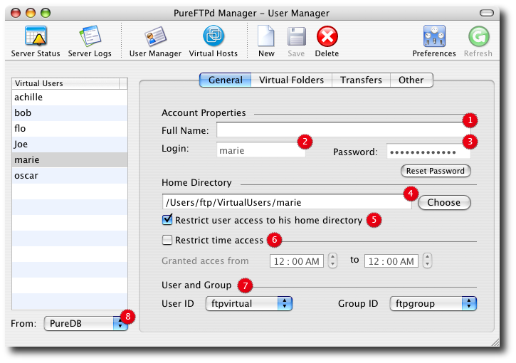
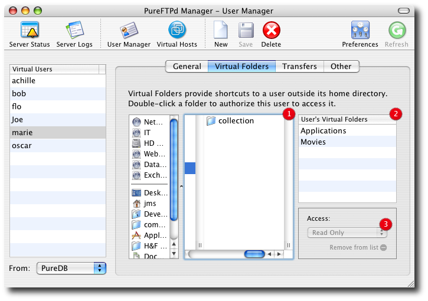
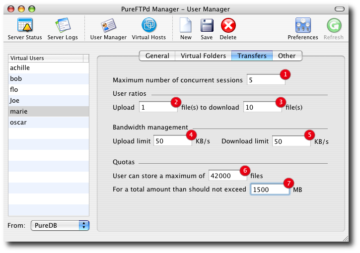
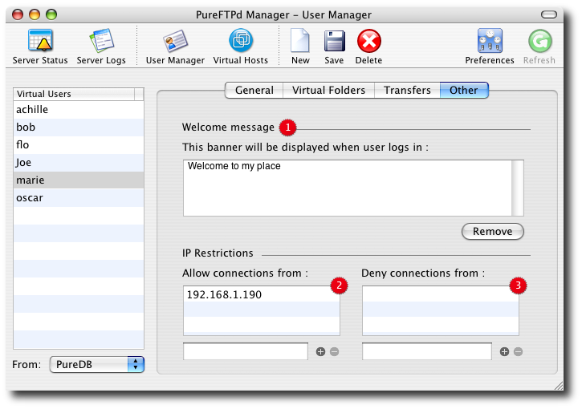

PureFTPd Manager - User Manager PureFTPd Manager - User Manager
Virtual users is a simple mechanism to store a list of users, with their
password, name, uid, directory, etc. It's just like Netinfo database. But
it's not. It's a different file, only for FTP.
It means that you can easily create FTP-only accounts without messing up
your system accounts.
Additionnaly, virtual users files can store individual quotas, ratios,
bandwidth, etc. System accounts can't do this.
Thousands of virtual users can share the same system user, as long as they
all have their own home directory and are restricted to it.
1. User Manager - General Settings

1. You friend or customer full name.
2. The login used by your friend or customer to authenticate to your server.
3. A password for this user. Click the Reset Password to change it.
4. User's home directory: where your user is located on your disk upon sucessful authentication.
2, 3, and 4 are mandatory informations.
5. A switch to restrict a user to it's home directory. It is generally a good thing for security to tick it. That way, when a new user logs in it will be brought to the home directory you specified above and will not be able to access any parent folder nor browse any other part of your hard drive.
If a user's of yours requires access to other part of your system, read the Virtual Folders information below.
6. Apply time restriction to specify a user can log in only at a particular time of the day.
7. User and Group defines to which real system account a virtual user i mapped to. Defaults settings are the one you set in PureFTPd Manager Setup Assistant and should be fine in most case.
Be extremely carefull when changing these settings and and not restricting a user to its home directory or if you are using virtual folders. You may grant permissions to a virtual user to modify or delete files outside its home directory.
8. In this pop up, you will find the different bases you can use to store virtual users. Pure-ftpd currently supports PureDB, LDAP, MySQL and PostgreSQL to store its virtual users. PureFTPd Manager lets you create virtual user using PureDB or MySQL only. To use PostgreSQL or LDAP as a virtual users directory, you need to configure it manually. Please see the man pages for more information.
Most user only need PureDB.
2. Virtual Folders
Virtual folders provide shortcuts to a user outside its home directory. In most scenarii, your users will be restricted to their home directories. This features lets you specify for a particular user a set of location it can access additionaly.

1. Your hard drive.
2. List of user's virtual folders.
3. Permissions a user has inside the virtual folders.
Default settings is most likely going to be Read Only in most cases, that way a user can access more information but is not allowed to modify it.
Another scenario would be to specify Write Only in order to create a dropbox like the one located in your Public folder.
This pop-up modifies permissions granted to Others on the destination folder. Please be extremely careful when using it as you may potencially open your system to the rest of the world in read write mode in a single click !
3. File Transfer Settings
As we said before, Virtual Users are cooler than system users because we can set more restrictions on them very easily. The following sccreenshot details the different restriction you can set to a user.

1. Allows a maximum of 5 simultaneous connections.
2. Set transfer ratio so that a user must upload 1 file...
3. ... in order to be allowed to download 10.
4. Adjust the bandwidth usage to suits your criteria. Here's the upload speed limit is set to 50KB/s...
5. ... and the download speed limit as well.
6. Apply quotas to your user: marie cannot store more than 42000 files on my server...
7. ... for a total size that cannot exceed 1.5GB
4. Banner and IP rules

1. Set a customized welcome message per user.
2. Allow connection only for IPs listed in the table.
3. Deny connection from all IPs listed in the table.
Read more ...
|
 Server Status
Server Status
 Server Logs
Server Logs
 Virtual Hosts
Virtual Hosts